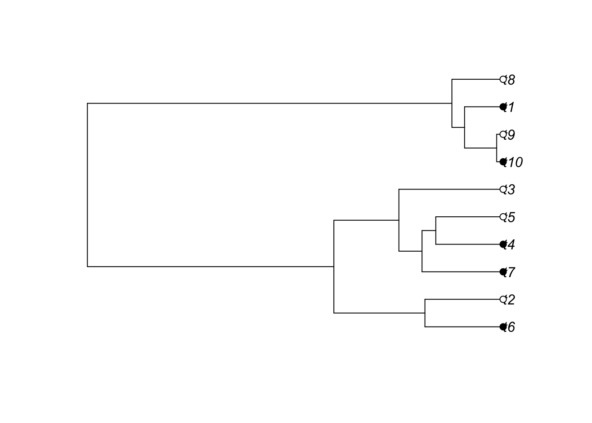

The following object is masked from 'package:Matrix':
expm
The following object is masked from 'package:ape':
balance
This code simulates output from the ace function. We will first try to grasp how the model behaves before we we try fitting it to data.
Ancestral character estimation methods can be based on a variety of approaches, but we will consider Markov chains superimposed on phylogenies. In the accompanying code to this we will learn how to fit these models using Maximum Likelihood, but for now we focus on simulating Markov chains on trees to understand how the models work.
First, let’s simulate a tree and some tip states:
tree <-rcoal(10)x <-sample(c(0,1), size=10, replace=T)plot(tree)tiplabels(pch=21,bg=x)

fit <-ace(x, tree, type='discrete', model='ARD')
Warning in sqrt(diag(solve(h))): NaNs produced
Exercise 1
Navigate through the ace help pages to determine whether Qij corresponds to the transition rate from state i-> j or from state j -> i. Based on your answer, does the Master equation for the Markov process use column or row vectors? Then, define a generator matrix, Q, in terms of the rates estimated just above (replacing the following line):
Q <-matrix(c(-1,1,1,-1),ncol=2) # can scale rates up or down:Q <- Q/1getP <-function(t,Q){ P <-expm(Q*t)return(P)}
Now, we will start at the root of the tree and simulate states at the internal nodes and at the tips of the tree. (The ape package does not have a function to easily do this for us, but it is good exercise to practice it ourselves).
First, let’s create a vector to store all of the states we simulate:
Simulate some tip states on a tree using a Markov model that you specify, and use ace to estimate it. Scale this up for a large number of tip state configurations to see how the distribution of Maximum Likelihood estimates for the Markov model rates compare with the true values you supplied. Are there particular combinations of branch lengths and rates that make it difficult to estimate model parameters?
2. (Hard, or maybe impossible)
Modify the code above to condition on a particular tip state configuration. This way, we can observe distributions of evolutionary scenarios consistent with a particular set of observations.
3.
In a fitted ace object, there is an element called lik.anc which records the probability of ancestral states at each node of the tree. Plot a dataset of your choice with pie charts displaying the ancestral state probabilities associated with models that you fit using ace. Navigate through the help pages (?ace) to specify a few different versions of models that impose constraints on the Markov generator, Q. How sensitive are ancestral state probabilities to your modeling choices?